全方位的数据管理产品满足您的需求
我们致力于打造安全、可控、简易的产品，并不断革新，助您在商业舞台上一展宏图
-
数据保护
-
数据管理
-
数据存储
-
云计算
InfoSemper CDM数据副本管理
鼎甲科技自主研发的，真正实现 CDM（数据副本管理） 业务的数据保护系统。可以支持生产环境的应急使用， 又可以支持非生产环境的开发、测试、数据分析等使用。
了解更多视数据安全如生命安全，他们选择了
中国10000+严控数据安全的组织选择了鼎甲，他们信赖的，也值得您的信赖
- 政府
- 金融
- 教育
- 企业
- 医疗
-

工信部自主可控国产化备份
核高基”重大专项从“十二五”开始推进自主信 息化试点工作，选择了包括中央办公厅、工信部 在内的十几个部门作为试点单位，我国有关装备 的研制也将采用自主CPU和操作系统。上百家自 主软硬件企业迅速形成集聚，联合攻关，通过软 硬件磨合优化，一起解决了几百个问题。
了解更多 -
南宁电子政务云
在云平台环境中部署鼎甲备份系统-鼎甲迪备， 可以兼容所有主流异构平台的数据保护，特 别是针对华为Fusion云平台进行自动的备份 保护，对所有核心应用数据库与海量业务文 件数据进行全面的全量、增量的自动备份， 通过重复数据删除技术提高数据备份与存储效率
了解更多 -

广东省电子政务云
广东省政务数据中心保存着省网上办事 大厅以及我省多个政府部门的核心数据， 缺乏异地灾备系统的数据保护，无法应 对主数据中心自然灾害、火灾、人为损 坏等不可预见的情况，以及带来的严重后果。
了解更多 -
浙江省粮食局
核高基”重大专项从“十二五”开始推进自主信 息化试点工作，选择了包括中央办公厅、工信部 在内的十几个部门作为试点单位，我国有关装备 的研制也将采用自主CPU和操作系统。上百家自 主软硬件企业迅速形成集聚，联合攻关，通过软 硬件磨合优化，一起解决了几百个问题。
了解更多
-
广东省邮政局
鼎甲计算机科技有限公司在广东省 邮政各分公司及邮政储蓄网点部署 鼎甲信息仓。在目标机上安装相应 客户端，实现各分公司及邮政储蓄 网点的数据备份及业务接管；在广 东省邮政总公司部署鼎甲信息仓， 各分公司及邮政储蓄网点通过各自 信息仓将数据上传至总公司，实现 数据的异地备份及统一管理。
了解更多 -

中国银行江苏省分行
2016年，江苏中行开始着手于构建 “同城双中心灾备系统”；针对行内 海量结构化/非结构化数据实现本地 备份和异地冗余；同时致力于解决备 份时间窗口过长、重删空间效率低下、 难以扩展等问题。这一系列的实际需 求以及日后日益增长的信息化建设发 展问题都亟需一套更加安全有效并且 可控的备份机制来满足。
了解更多 -
广州银联网络支付有限公司
采用鼎甲容灾备份管理平台，代替 手工备份工作（数据库、文件、虚拟 化平台），实现统一监控管理；手工 脚本备份方式效率低下，计划采用鼎甲 SAN备份方案；备份存储容量不足，需 要增加备份存储容量；整个备份软件 功能全面、部署快捷、使用简单、维护容易。
了解更多 -
韶关市人民银行
伴随着韶关中支行信息化的推进，组织运营对信 息系统的依赖度越来越高，IT系统的可持续化运 行，以及IT系统中数据的安全性，已经是对组织 运营风险控制产生重大影响。当灾难突如其来时， 绝大多数用户所能做的事情，就是在灾难发生两 三天以后恢复灾难发生前的数据，而这并不能满 足当前信息化安全保护的需求。韶关中支行信息 科所希望的，不是灾难发生若干天后忙碌、紧张 而又缓慢地恢复整个业务系统，而是希望不论任 何灾难降临，业务都能以尽可能短的时间内恢复运作。
了解更多
-
中国人民解放军空军预警学院
空军预警学院，原名空军雷达学院，是我国 唯一一所预警监视领域的专门院校、全军唯 一一所预警监视和电子对抗均为主体学科专 业的院校、全空军唯一一所指技兼容的中级 军事任职教育院校，主要承担全军预警系统 和空军地面电子对抗部队指挥技术军官及士官培养任务。
了解更多 -
中山大学
在中大大学城机房本地数据中心部署鼎 甲备份存储一体机-鼎甲信息仓，可以 兼容所有主流异构平台的数据保护；对 所有所需保护的业务数据库、操作系统 和文件、虚拟机进行全面的全量、增量 的自动备份，通过压缩、重删提高数据备份效率
了解更多 -
华南师范大学
依据华南师范大学对信息安全的建设 目标，本方案将采用鼎甲计算机科技 有限公司研发的企业级国产备份管理 软硬一体化设备——鼎甲容灾备份一体机。 该产品是为企业级网络环境而设计的整 体数据保护解决方案，提供了灵活的升 级能力，优秀的可管理性和可用性，同 时支持Unix、Linux和Windows平台。
了解更多 -
东北师范大学
东北师大数字化校园建设，包括选课系统、 认证系统、校园一卡通系统、科研系统、 网站等系统等，为老师教学、办公，学生 上课、生活带来的极大的便利，成为现代 化的先进的IT技术打造的高等学府。
了解更多
-

中国电子信息产业集团有限公司
本方案依据《中国电子商密网自主可控 改造项目总体实施方案》对其网络与数 据中心、安全保障系统、容灾备份系统 进行设计，所有业务系统平滑迁移到飞 腾1500A处理器搭载银河麒麟操作系统的 自主可控平台上，需要对国产自主可控平 台的银河麒麟操作系统、麒麟云平台、达 梦数据库等关键业务数据构建一个国产自主可控的备份容灾系统。
了解更多 -
联合汽车电子有限公司
联合汽车电子有限公司（简称UAES）成立于1995年， 是中联汽车电子有限公司和德国罗伯特•博世有限公 司在中国的合资企业。重庆联合汽车电子信息化中 心业务系统主要分为两大部分，一部分承担生产线 业务，一部分承担办公业务。鼎甲InfoKist备份一 体机对所有业务系统提供高效数据保护。
了解更多 -
武商集团股份有限公司
武商集团股份有限公司是湖北省最大的 综合性商业零售企业之一，是全国闻名 的十大商场之一。随着该集团信息化的 飞速发展，卡卷、POS机、供应链等系 统发挥着越来越重要的作用，同时集团 内近200个门店都各自拥有自己的的交易。 实现应用、数据库、操作系统、虚拟机的 全面数据保护，恢复到数据库的任意时间 点，最大限度的保护数据系统,保证众多业 务系统的数据安全，迫在眉睫。一旦业务 数据稍有丢失,造成的金钱损失、名誉损失将是不可估量的。
了解更多 -
浙江报业集团
目前浙报集团众多应用系统运行在虚拟化的平台， 拥有29台虚拟化宿主机平台，这样就需要专业完 整的虚拟化平台备份一体化解决方案，通过备份 产品，自动将指定的400多个虚拟机通过LANFREE 技术备份到备份一体化设备，每台虚拟机可以保留 1周的备份时间点，当虚拟机崩溃、核心数据丢失、 应用被破坏甚至宿主机损毁的情况下，用户能通过 简单的图形化快速恢复备份虚拟机到指定时间点， 为用户虚拟化平台运行保驾护航。
了解更多
-
浙江省中医院
浙江省中医院信息系统主要包括HIS系统、 PACS系统、LIS系统等。这些系统产生的 数据的安全、储存、利用、关联性等都有 很高的要求。由于医院业务的特殊性，在 浙江省中医院信息系统的内外部环境中， 任何人为或自然因素所导致的应用系统中断， 都会造成全院工作停滞，如果发生数据大量 甚至完全丢失，则后果不堪设想。
了解更多 -
福建肿瘤医院
福建省肿瘤医院主要业务系统包括HIS、PACS、 EMRS等系统，数据主要包括SQL Server数据 库、PACS文件等数据。需求对这些数据进行 备份，并对数据库数据进行同步。
了解更多 -
辽宁省电力中心医院
辽宁省电力中心医院目前有HIS系统、 LIS系统、电子病例、PACS系统、体检 和合理用药系统、这些系统对提高医院 日常工作的效率、病人身体健康，保障治 疗效果，以及日后处理医患纠纷，查找医 疗事故原因的最原始数据。其重要性不言而喻。 但是目前对这些数据并没有很好的保护手段。
了解更多 -
西昌人民医院
西昌人民医院现有数据中心已形成TB数据量， 分别分布在物理机和虚拟机上，物理机全部 为X86服务器部署windows 、linux操作系统， 数据库分布为Oracle、 Oracle RAC、MSSQL、 MySQL等数据库；目前如此多的数据量并未使用 专业的备份系统进行保护，另外由于本地灾难性 事件如机房火灾、地震、水灾等导致本地数据丢失 业务中断的情况，数据将会完全不可恢复，本地化 备份已经无法满足需求，须考虑异地数据级容灾。
了解更多
权威认证
-

中国电子旗下唯一数据管理企业
-
工信部指定容灾备份管理师产学研合作机构
-
国家保密局涉密资质认可
-
中国应急管理信息化产品技术创新奖
最新动态
榜上有名 鼎甲入围2018信息服务业新业态创新企业30新
发布日期：2018-07-03 15:56:26好产品，自己会说话，有实力，总会被认可。 近日，鼎甲又一次收获认可——入围“2018信息服务业新业态创新 企业30新”遴选活动(以下简称30新)。
鼎甲与达梦达成战略合作 自主可控生态圈更添繁荣
发布日期：2018-06-28 15:24:59近日，鼎甲与达梦在广州签署战略合作协议。 世界范围内信息安全威胁日益加剧，加快发 展安全可靠的信息基础设施、加快推进自主 可控的软硬件生态圈建设已迫在眉睫。鼎甲与达梦 ，两个国产IT技术中坚力量的携手，是国产化IT技术 取得长足进步的一个缩影，也是国产数据库信息安全可靠的一大步。
创响中国 鼎甲亮相创新创业成果交易会
发布日期：2018-06-26 15:13:09“创新”深刻影响着中国，创新驱动发展成为 国家的发展战略，而科技创新是提高社会生产力和 综合国力的战略支撑，被摆在国家发展全局的核心位置。
解自主可控燃眉之急，鼎甲科技成功恢复纯国产系统数据
发布日期：2018-06-21 16:34:02响应国家自主可控强国战略，越来越多政府、 军工、央企等关键组织单位采用纯国产信息化软硬件， 一旦面临系统问题，导致业务中断，甚至数据资产丢失，怎么办？